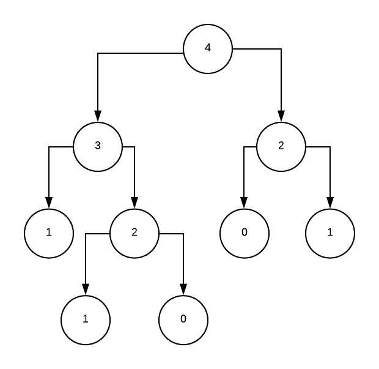

动态规划
动态规划（Dynamic Programming，DP）将复杂的问题分为小问题（smaller sub-problems），解决小问题（sub-problem）并将每个小问题的结果保存到一个数组（或者类似的数据结构）中，这样每个小问题只会计算一次。
它既是一个数学优化方法（mathematical optimisation method）也是一个计算机编程方法。
最优解问题（Optimisation problems）寻找最大值或者最小值解决方案。
一般规则是，如果遇到了一个问题，它的初级解决方案的时间复杂度是 ，那么，更好的解决方案是动态规划。
1、小问题（sub-problem）
小问题时原始问题的缩小版本。比如：
1 + 2 + 3 + 4
可以等价分拆为：
1 + 2
3 + 4
解决了这两个小问题后，将小问题的结果相加，就能得到原始问题的结果。
再看下例：
6 + 5 + 3 + 3 + 2 + 4 + 6 + 5
其中 6 + 5 出现了两次，第一次遇到时会计算它的值，而第二次遇到时，就直接使用之前的计算结果。在 DP 中，会将问题的结果保存，所以不需要重复计算。通过查找每个小问题的结果，可以处理原始问题。
2、记忆（memoization）
记忆，指的是存储结果的行为。
通过斐波那契序列（Fibonacci sequence）来看为什么存储结果是有用的。这个问题一般用分而治之（divide and conquer）的方法来解决。
分而治之的 3 个主要步骤：
- 将问题划分为相同类型的小问题
- 递归地（recurively）解决小问题
- 将小问题的结果结合起来得到原始问题的结果
动态规划，则往第 2 步增加了额外的步骤，即“记忆”。
斐波那契序列是一个数值序列，下一个数值的值为当前数值加上一个数值。比如，从 1 开始：
1 + 0 = 1
1 + 1 = 2
2 + 1 = 3
3 + 2 = 5
5 + 3 = 8
用 Python 代码表示第 n 个值为：
def F(n):
if n == 0 or n == 1:
return n;
else:
return F(n - 1) + F(n - 2)
这种表示方法即“递归”（recursion）。
下图用执行树表示 F(4) 的计算过程：

其中 F(2) 会计算两次，可以想见，输入越大重复计算（repetition）越多。动态规划的目的是避免重复计算相同的小问题。将 F(2) 的结果保存，需要的时候直接取而不是重新计算。
用动态规划表示斐波那契序列计算为：
def fibonacciVal(n):
memo[0], memo[1] = 0, 1
for i in range(2, n+1):
memo[i] = memo[i - 1] + memo[i - 2]
return memo[n]
3、如何分辨动态规划问题
可以对时间复杂度介于多项式时间（polynomial time）和指数时间（exponential time）的问题尝试使用动态规划。
以多项式时间解决的问题是简单问题（Tractable problems），很难说可以有更快的解决方法。比如，二分法查找和排序都很快。以指数时间解决的问题是复杂问题（Intractable problems），只能通过每一次运算靠蛮干解决。对于没有更高效解决方法的复杂问题，也称为 NP-complete 问题或者 NP-hard 问题，其中 NP 是非多项式（non-polynomial）。
当看到问题中有“最大\最小”、“最长\最短”，“最多\最少”这类词时，可以知道这是一个优化问题（optimisation problem）。对于这类问题，动态规划通常可以解决。
如果意识到问题是一个优化问题，但是不确定是否可以用动态规划解决。那么，首先要清楚要优化什么，然后决定执行优化的难度。有时，使用贪婪算法（greedy approach）作为优化方案就足够了。
动态规划采用的是蛮干的方法（brute force approach）。定位重复的工作，并消除重复。
要掌握动态规划，就要理解问题。列出所有影响结果的输入，一旦清楚了所有的输入和输出，就要清楚能否将问题划分为小问题，如果可以，那么可能可以使用动态规划。然后，找出重复的部分并解决。找出重复部分（recurrence）的时候，要记着重复部分必须是对解决问题有益的。有时结果是重复部分的输出，有时则需要通过分析一些重复部分的输出才能得到结果。
动态规划可以解决很多问题，但是并不意味着没有更好的解决方案。要知道，其实动态规划只是一个聪明一点儿的蛮干方法。有时很有用，有时可能用处不大。
4、用动态规划解决问题
带权重的区间调度问题（ Weighted Interval scheduling problem），以洗衣房为例，每个客户的衣物能为洗衣房带来价值 v，客户衣服开洗时间 s，洗涤结束时间 f，计算怎样洗衣以使洗衣房获取最大的价值。
4.1、问题分析
n 位客户，按照洗衣开始时间 s 排序。
子问题可以是，调度 0 到 n - 2 个客户时、 0 到 n - 1 个客户时、 0 到 n 个客户时，能实现的最大价值。
4.2、数学递推（Mathematical Recurrences）
如果子问题不能进行数学递推，那么定位的子问题可能是错的问题。
进行数学递推的两步：
定义基础案例（Base Case）
基础案例，指问题最小化时的案例；比如，斐波那契序列中，序列长度 n 为 0 或 1 时，都返回 n。
对于洗衣房这个问题，基础案例为 n = 0，相应的最大价值也是 0。
第 n 步应该做什么决定
4.3、记忆数组的维度和填充的方向
记忆数组的维度由结果依赖的变量个数决定。
4.4、编码
定义洗衣作业 Job：
# Class to represent a job
class Job:
def __init__(self, start, finish, profit):
self.start = start
self.finish = finish
self.profit = profit
二分法查找：
# A Binary Search based function to find the latest job
# (before current job) that doesn't conflict with current
# job. "index" is index of the current job. This function
# returns -1 if all jobs before index conflict with it.
def binarySearch(job, start_index):
# https://en.wikipedia.org/wiki/Binary_search_algorithm
# Initialize 'lo' and 'hi' for Binary Search
lo = 0
hi = start_index - 1
# Perform binary Search iteratively
while lo <= hi:
mid = (lo + hi) // 2
if job[mid].finish <= job[start_index].start:
if job[mid + 1].finish <= job[start_index].start:
lo = mid + 1
else:
return mid
else:
hi = mid - 1
return -1
用于查找，执行当前 Job 之前，可以执行的（结束时间小于当前 Job 开始时间的） Job。
调度方法：
# The main function that returns the maximum possible
# profit from given array of jobs
def schedule(job):
# Sort jobs according to start time
job = sorted(job, key = lambda j: j.start)
# Create an array to store solutions of subproblems.
# table[i] stores the profit for jobs till arr[i] (including arr[i])
n = len(job)
table = [0 for _ in range(n)]
table[0] = job[0].profit;
# Fill entries in table[] using recursive property
for i in range(1, n):
# Find profit including the current job
inclProf = job[i].profit
l = binarySearch(job, i)
if (l != -1):
inclProf += table[l];
# Store maximum of including and excluding
table[i] = max(inclProf, table[i - 1])
return table[n-1]
将要执行的 Job 的数组按照开始时间升序排列。创建一个有 n 个元素组成的 table 数组，table[i] 表示 Job 执行到 job[i] 时的最大可能利润。table[0] 为基础案例，直接等于 job[0] 的利润。从 job[1]开始循环——通过二分法查找 Job 数组 job 中结束时间小于当前执行 Job 的 Job，如果能找到，则将找到的 Job 的索引 l 对应的最大利润table[l] 相加，即可得到执行到当前 Job 时能实现的最大利润，否则，将当前 Job 的利润与 table[i - 1] 相比较，取最大值作为执行到当前 Job 时，能实现的最大利润。最终 table[n - 1] 存储了能实现的最大利润。
5、背包问题（Knapsack Problem）
往背包中装物品，背包承重能力有限；物品有一定的价值和重量；实现背包中物品总价值最大化。
最简单的方法是，将物品进行各种组合（combination），对每种组合进行价值和重量判断，但是这种方法的时间复杂度是 。
5.1、背包问题的表格分析
假设背包承重极限为 7，物品 (weight, value) 如下，已经按照重量升序排列：
(1, 1), (3, 4), (4, 5), (5, 7)
结果需要考虑的变量有两个——重量和价值，列表示承重，行对应物品，单元格中表示对应承重和物品时的最大价值：
| 0 | 1 | 2 | 3 | 4 | 5 | 6 | 7 | |
|---|---|---|---|---|---|---|---|---|
| (1, 1) | ||||||||
| (4, 3) | ||||||||
| (5, 4) | ||||||||
| (7, 5) |